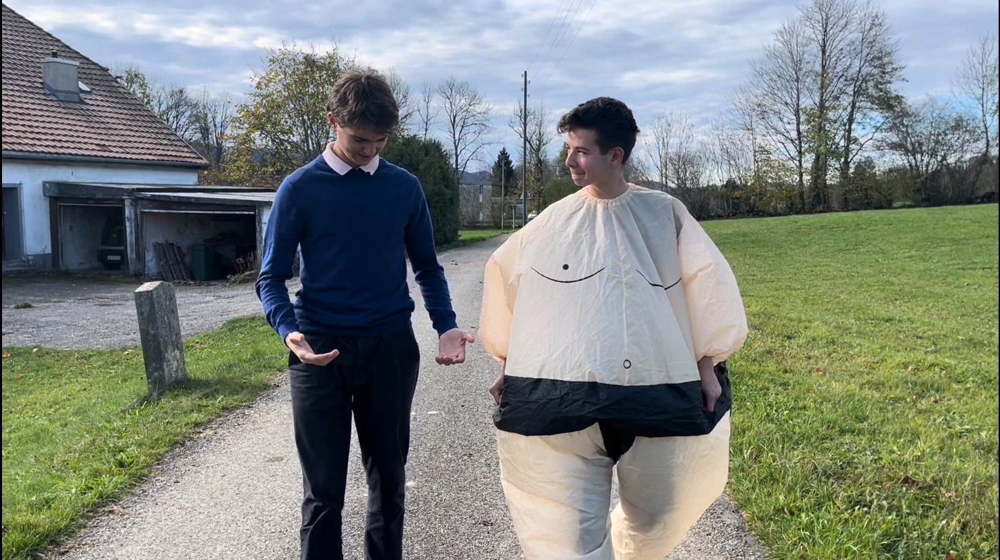

Willkommen
Dies ist die offizielle Seite des LAP1 der 1a vom GKG. Zusammen mit Frau Lipawsky sowie Herrn Weiss sind wir eine Woche lang in das Studienheim "la Ferrière" gefahren, um uns eine Woche lang mit dem Thema "parallel" auseinanderzusetzen. Die Endprodukte dieses Lagers werden hier nun ausgestellt.
Parallel ?
Je mehr man über das Wort "parallel" nachdenkt, desto mehr Ideen kommen einem in den Sinn. Für uns gab es ein klares Hauptthema unter allen Themen, und zwar "Parallelwelten". Viele unserer Projekte setzen sich mit Parallelwelten auseinander, so auch diese Internetseite.
Mehr Erfahren?
Hier geht es zu all den verschiedenen Projekten! Wie bereits erwähnt, alle Projekte wurden während der LAP1-Woche erstellt und (zum Grossteil) fertiggestellt.
